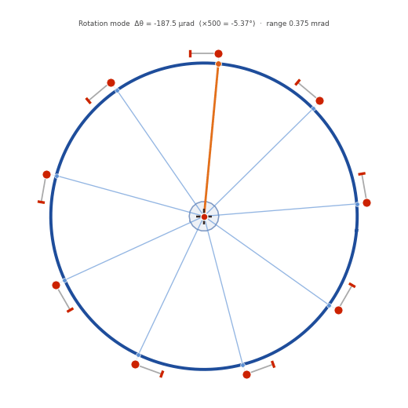

Revised 2026-05-27 ·
5,000-sample MC · scipy HiGHS LP · 3-DOF rigid-body model (Δx, Δy, Δθ)
· metric: peak-to-peak range (n=1 wall displacement)
Key result: The vacuum vessel can rattle laterally over a
peak-to-peak range of 3.09 mm at the worst (nominal, fully-centred)
assembly — a hard theoretical ceiling. This lateral motion is an n=1 rigid
displacement of the first wall: it shifts the plasma–wall gap toroidally and,
during limited start-up on the inner wall, localises the heat load. Monte Carlo over
random assemblies (peak-to-peak range): P95 = 3.01 mm, P99 = 3.09 mm,
median = 2.24 mm, mode ≈ 2.49 mm. The bound is set by the 3 mm toroidal
assembly slot and is largely irreducible by assembly control. A separate
±187.5 µrad rotation mode is n=0 (it does not perturb the plasma–wall gap).
Assumption (governs every number ×2): the toroidal slot allowance is
taken as ±1.5 mm (3 mm total travel) about the assembly position, per the
design intent. If the true allowance is ±3 mm (6 mm slot), every figure below
doubles (range 3.09→6.19 mm, rotation ±187.5→±375 µrad). This should be confirmed
against the as-built gravity-support specification before the numbers are used.
§1 — Physical Mechanism
The ITER Vacuum Vessel rests on 9 gravity supports equally spaced
toroidally on a support ring of radius R ≈ 8 m. Each support is a
four-bar linkage that accommodates large radial displacements
(thermal growth, assembly) with negligible toroidal stiffness. At the top of each linkage a
pin with its axis in the toroidal direction carries the VV bracket, which
is mechanically limited to ±1.5 mm of toroidal travel about its assembly
position. Radial motion is free; toroidal motion is the constrained "rattle".
Constraint model
For a rigid-body displacement q = [Δx, Δy, Δθ] (horizontal translation
and rotation about the vertical machine axis), the toroidal slide at support i is
δᵢ = −sin(φᵢ)·Δx + cos(φᵢ)·Δy + R·Δθ (= A[i,:]·q)
with φᵢ = π/2 − 2πi/9 and R = 8 m. The 9×3 constraint matrix satisfies
AᵀA = diag(4.5, 4.5, 576) — exactly diagonal, so the three DOFs are
mutually orthogonal (uncorrelated). At assembly the bracket sits at offset ui
within its slot; the mechanical limit requires
|u_i + δᵢ| ≤ 1.5 mm ∀ i
Method note (a ruled-out approach): projecting the assembly offsets onto
Col(A) with the pseudoinverse A⁺ is physically wrong — it assumes the gaps form a
consistent rigid-body mode and yields infeasible support slides (>1.5 mm). Assembly
offsets are independent at each support and the reachable motion is a constrained
linear program (below). The earlier pseudoinverse scripts have been removed from the repo.
§2 — Why It Matters: Two Distinct Consequences
The lateral rattle is a rigid horizontal shift of the vessel (Δx, Δy). It has two
largely independent consequences, both bounded by the peak-to-peak range of §7 — one
quasi-static, one dynamic.
(a) n=1 first-wall positioning (quasi-static). A horizontal shift moves the
first wall sideways relative to the plasma axis, so the plasma–wall gap varies as
cos(toroidal angle) — a textbook n=1 perturbation. The vessel "lands, then
moves, then moves again": between shots it settles to a different position within its
envelope. When the plasma is limited on the inner wall during start-up, the
gap asymmetry makes it contact preferentially where the gap has closed, localising the
start-up heat load toroidally. n=1 is precisely the error tokamak operation works
hard to avoid.
(b) Electromagnetic-driven impact (dynamic). Because the vessel is
mobile within its ±1.5 mm slots, EM loads (disruptions, VDEs, halo currents) can
accelerate it across the gap until it impacts its end-stops. The resulting
shock loads on the gravity supports — and the fatigue from repeated impact cycling over the
machine life — can be significant and must be assessed dynamically. The peak-to-peak range is
the free travel available before impact; this is a genuine structural-dynamics and fatigue
concern, not only a static positioning number.
Rotation is different. A rotation Δθ about the vertical axis turns the
(axisymmetric) torus about its own axis — it does not change the
plasma–wall gap (n = 0). It only shifts discrete features (tiles, ports) toroidally by
R·Δθ. Rotation is therefore reported separately (§9) as a local-alignment mode and is
not folded into the n=1 heat-load number.
§3 — LP Formulation & Rattle Polytope
Linear programming is the correct solver. Given assembly state
u ∈ ℝ⁹, the maximum reach of the VV centre in direction θ is
max [cos θ, sin θ, 0] · q
s.t. A·q ≤ 1.5 − u
−A·q ≤ 1.5 + u (mm)
q free (Δθ optimised)
The feasible set is a convex polytope in ℝ³; its projection onto (Δx, Δy) is the
rattle polytope — every reachable VV-centre position (blue shaded region in
the diagrams). The rattle metric used throughout this report is the peak-to-peak
range: the full diameter of this polytope along its widest axis,
= reach(θ) + reach(θ+π) maximised over θ. (The one-sided reach — the radius — is half of
this for the symmetric nominal case; it is a different quantity and is not used as the
bound.)
The nominal (u = 0) polytope is a near-circle of diameter 3.093 mm
(one-sided reach 1.547 mm; 20 vertices; X/Y aspect 1.015, reflecting the 9-fold support
symmetry).
§4 — Why the Range Slightly Exceeds 3 mm
A single bracket travels ±1.5 mm (3 mm total), yet the nominal peak-to-peak range is
3.093 mm. The reason is geometric, and it is worth stating correctly.
Support
φ (°)
Δx coefficient (−sin φ)
+X reach in isolation
0 (top)
90
−1.00
1.5/1.00 = 1.500 mm — tightest
3
−30
+0.50
1.5/0.50 = 3.000 mm
4, 5
−70, −110
+0.94
1.5/0.94 = 1.596 mm
2, 7
10, 170
∓0.17
1.5/0.17 = 8.64 mm — nearly free
Sine-angle intuition (corrected). The Δx coefficient is −sin φ
(not cosine), so a support's grip on +X scales with |sin φ|: it is
maximal at the top/bottom (φ = ±90°, +X is purely toroidal there) and falls to
zero at the sides (φ = 0°/180°, where +X is purely radial and thus free). A support
positioned away from the top/bottom is looser on +X — its isolation limit rises
from 1.500 mm toward infinity. The top support alone would cap +X at exactly 1.500 mm.
The extra reach to 1.547 mm comes from the rotation DOF. Locking
Δθ = 0 gives exactly 1.500 mm (top support binding). Allowing rotation, the LP finds
Δx = 1.547 mm, Δy ≈ 0, Δθ = +5.83 µrad — a vertex where three
constraints bind simultaneously: supports 0, 4 and 5. Support 0 (top) is
still binding (δ₀ = −1.500 mm exactly); the rotation term R·Δθ = +0.047 mm holds it
on its stop while letting supports 4 and 5 reach their +1.5 mm stops at a slightly larger
Δx. So the range exceeds 3 mm not because any support is "unlocked," but because the optimum
sits at a 3-support vertex that exploits the slack of the angled supports. (The achievable
Δx is independent of R; R only sets the tiny rotation needed.) Half-range × 2 = 1.547 × 2
= 3.093 mm.
§5 — State Diagrams with Rattle Polytope
Each panel shows the VV (thick blue ring) at its maximum +X position; the orange spoke
(support 0) is an orientation marker, and the blue shaded polygon is the rattle polytope —
all positions reachable from that assembly state. Displacements are magnified ×500.
Reading the supports. At each support the grey toroidal slot (with red
±1.5 mm end-stops) is held at a constant radial distance from the vessel wall — the
four-bar linkage moves radially with the vessel, so radial motion is free. The grey bracket
connects the wall to the coloured pin, whose position in the slot shows how much of the
±1.5 mm toroidal travel is used: blue
= slack, orange = near the limit,
red = hard against the stop. Watch the
slots track the vessel radially while the pins slide toroidally — that is the whole
mechanism in one picture.
Left: nominal assembly (u = 0) — polytope ≈ circle, 3.09 mm diameter.
Middle: worst MC sample — polytope shifted/asymmetric.
Right: alternating ±1.5 mm offsets — polytope collapses (VV locked, range ≈ 0).
The locked case. If alternating supports sit at +1.5 and −1.5 mm, any
lateral motion tightens one bracket or another and the VV is fully locked (range = 0). This
confirms the rattle depends on the actual assembly state, not just the gap size — and that
the worst case is the centred assembly (the assembly team's target), not a random one.
§6 — Animated Rattle: Worst Case & Typical Assembly
The VV rocks along its principal rattle axis; the blue polygon (fixed) is the rattle
polytope and the red dot traces the VV centre. Rotation during translation is negligible
(≈ 0.17° at ×500), confirming the lateral motion is essentially pure n=1 translation.
Worst case — peak-to-peak range 3.09 mm
(the design bound; equals the nominal/centred ceiling) · ×500 magnificationTypical as-built assembly (drawn near the distribution mode)
— peak-to-peak range ≈ 2.49 mm · the value an as-built machine is most
likely to exhibit · ×500 magnification
§7 — Monte Carlo Results (5,000 samples)
5,000 assemblies; offsets drawn independently from Uniform(−1.5, +1.5) mm at each of the
9 supports. For each sample the rattle is the full peak-to-peak range along
the principal direction (72-direction LP sweep). Generated reproducibly by
vv_mc_generator.py (fixed seed 20260527).
Peak-to-peak range distribution (left) and CDF (right); the nominal LP ceiling
(3.09 mm) and key percentiles are marked.
Statistic
Peak-to-peak range (mm)
Notes
LP ceiling (nominal u = 0)
3.093
Hard theoretical maximum; centred assembly = worst case = team's target
MC maximum observed
3.093
A random sample reaching the ceiling
P95
3.013
95th percentile of random assemblies
P99
3.092
P90
2.897
Mode
2.49
Most probable as-built value
P50 (median)
2.244
Typical random assembly
Minimum observed
0.23
A near-blocking assembly
Interpretation — and a caution. The peak-to-peak range is robust to
assembly scatter: random offsets shrink the polytope diameter only modestly (P95 = 3.01 mm
is barely below the 3.09 mm ceiling), and only the pathological alternating pattern locks it.
The spike at the right edge of the histogram is a boundary pile-up: the range
is the worst-direction polytope diameter, hard-capped at 3.093 mm, and a few percent of random
assemblies fail to block the rattle in any direction and so sit on the ceiling. (It
converges with direction count — physical, not a numerical artifact.)
Crucially, the assembly team aims to centre the brackets (u ≈ 0) — which is exactly
the worst case (3.09 mm). So P95 is not a relaxation of the design case: use
3.09 mm. The single-sided offset of the VV centre from the machine axis is
≈ 1.55 mm for a centred assembly, up to ≈ 2.90 mm for an unlucky offset assembly.
§8 — Effect of Gap Measurements
If the team measures bracket gaps at some supports (feeler gauges, laser trackers, CMM),
each measurement replaces an unknown ui with its true value. It does
not narrow that support's 3 mm constraint band — it only fixes where the band sits.
The bound therefore tightens only when a measured offset happens to be large enough to become
a binding constraint.
Left: the range distribution — measuring all 9 gaps reveals one value from it
(most likely near the mode, never 0). Right: conditional P95 vs number of gaps measured —
flat at the 3.09 mm ceiling if the measured supports are centred, declining only slowly
for typical values.
Supports measured (k of 9)
Conditional P95 (mm)
Effect
0 (none — today's design state)
3.01
baseline
1 (one sector landed)
≈ 3.0
no meaningful change
2
≈ 3.0
negligible
4
≈ 2.9
marginal
6
≈ 2.6
tightening begins
9 (all)
deterministic ≈ 2.5
one value; range 0.2–3.09; never 0
Measurement reveals, it does not relieve. Measuring all 9 gaps collapses the
uncertainty to zero, not the rattle to zero: it converts the problem to a
deterministic LP whose answer is that assembly's actual range — most likely near the mode
(≈ 2.5 mm), anywhere in 0.2–3.09 mm, and 3.09 mm if the assembly is centred
(the target). The previously-reported "9 supports → ~0 mm" was incorrect.
No "tightest-coupled cluster" to target. Because AᵀA = diag(4.5, 4.5, 576)
is exactly diagonal, the three rigid-body DOFs are uncorrelated; measuring adjacent
versus spread-out supports is statistically identical. The only thing that helps is
measuring more supports (raising the chance of catching a binding one). Example: with
supports 3 and 4 measured (+X coefficients 0.50 and 0.94) the conditional P95 falls by < 1% —
negligible.
Current state — one sector landed. With approximately one VV sector landed on
its gravity support (k = 1 known gap), the q95 rattle bound is statistically indistinguishable
from the all-unknown baseline. The bound to use today remains 3.09 mm peak-to-peak.
A material reduction requires roughly five or more sectors landed and gap-measured, and even
then it is an uncertain gamble on the measured values rather than a guaranteed reduction.
§9 — Rotation: a Separate n=0 Mode
The VV can also rotate about the vertical axis. The LP for maximum Δθ gives a range of
±187.5 µrad (0.375 mrad): in pure rotation all 9 brackets slide
synchronously by the same R·Δθ = ±1.5 mm and bind together. At ×500 this is ±5.37° — clearly
visible as the orange spoke sweeps.

Pure rotation mode — range ±187.5 µrad = 0.375 mrad ·
all 9 brackets move synchronously · ×500 magnification (spoke 0 sweeps ±5.37°)
Rotation does not drive the heat-load concern. Rotating an axisymmetric torus
about its own axis leaves the plasma–wall gap unchanged (n = 0). The ±187.5 µrad rotation
shifts discrete first-wall features (tiles, ports) toroidally by ±1.5 mm at R = 8 m — a
local mechanical alignment consideration for ports and penetrations, not an n=1
plasma-facing issue. It must therefore not be added to the 3.09 mm n=1 number; it is a
distinct, independent mode. During the translation optimum rotation contributes only 5.83 µrad
(0.047 mm) and is invisible.
§10 — Recommendations
#
Recommendation
Status
1
Use 3.09 mm peak-to-peak as the bounding n=1 lateral wall displacement (nominal/centred assembly — the team's target and the theoretical ceiling)
CONFIRMED
2
Do not rely on the MC P95 (3.01 mm) as a relaxation — it is only ~3% below the ceiling and the realistic assembly is centred (worst case)
CAUTION
3
Assess start-up heat-load localisation on the inner-wall limiter (n=1) for a wall offset up to ≈ 2.9 mm single-sided, and shot-to-shot variation up to 3.09 mm
ACTION REQUIRED
4
Assess the dynamic impact loads on the gravity supports from EM-driven motion across the ±1.5 mm gap (disruptions/VDEs/halo currents), and the fatigue from repeated impact cycling over machine life
ACTION REQUIRED
5
The bound is set by the 3 mm toroidal slot and is largely irreducible by assembly control; reducing the lateral rattle means reducing the slot/tolerance or adding toroidal restraint
DESIGN LEVER
6
Gap metrology gives little benefit until ≥ 5 sectors are measured; with one sector landed the bound is unchanged. Confirm whether "landed" implies a measured gap
RECOMMENDED
7
Confirm the ±1.5 mm vs ±3 mm slot interpretation against the as-built GS spec — it scales every number by 2×
VERIFY
8
Treat the ±187.5 µrad rotation (n=0) as a separate local-alignment case for ports/penetrations, not part of the n=1 budget
NOTED
Monte Carlo generated reproducibly by vv_mc_generator.py (scipy HiGHS LP,
peak-to-peak range metric, N = 5000, fixed seed 20260527 → committed data in
data/). Figures and animations by vv_viz.py; all displacements
magnified ×500 in diagrams. Every number in this report regenerates from the repository.
Source: Simon-McIntosh/vv.